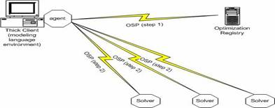
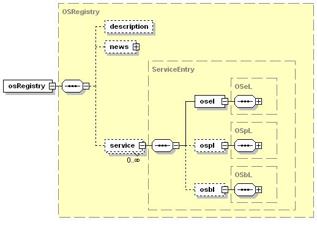

|
Optimization Services Registry (OSRegistry.xsd)
Click to see or download the OSRepository XML Schema -> OSRegistry.xsd [actively under development]
At the core of our Optimization Services registry is a database. OSRegistry.xsd is a specification of the organization of the registry database information.
To locate services in a decentralized serviced-oriented distributed system, software agents coordinate with each other and with registries. Some registries are general ones that keep information of all kinds of Web services, such as Universal Description, Discovery and Integration (UDDI). Others are specialized ones like the OS registry that only serves registration and discovery of Optimization Services. The OS registry knows all the registered services (solvers, analyzers, simulations) on the OS network by keeping their metadata information. The OS registry can be viewed as a light-weight server as no registered services are actually executed by this registry; instead clients directly contact the services in a peer-to-peer mode.

In terms of standardization, OS-registry related protocols do not face as much imminent pressure of universal acceptance as the non-registry related protocols. There is only one public registry on the entire Internet and there are much fewer registry developers compared with the other OS developers.
There are mainly two categories of registry-related OSP protocols; one deals with representation and the other deals with communication. To ensure that the OS registry only sends addresses of the services (especially solvers) that are of reasonably high quality, regulations are imposed when an OS-compatible service is to be registered in the OS registry. The following three OSP protocols are designed to make sure a solver is and continues to be well-described, live, reliable, and robust. Information about registered services in the OS registry includes three main categories:
- Entity information that is reported by service developers at registration, e.g. service and owner information, solver or simulation types and service locations. We call this category of information “entity” information to emphasize the information is relatively static. This is addressed by the Optimization Services entity Language (OSeL).
- Real-time process information that is either reported by the registered service (“push”) or detected by the OS registry (“pull”), e.g. how many optimization jobs are at the service server. We call the information “process” information to emphasize the information is dynamic. This is addressed by the Optimization Services process Language (OSpL).
- Benchmark information that is gathered separately by auxiliary benchmarker tools designated by the OS registry, e.g. general solver ratings and performance profiles. This is addressed by the Optimization Services benchmark Language (OSbL).
All the three types of information are kept in an XML database of the OS registry. As the OS registry is an open registry, to facilitate communication (especially discovery) with the registry, the structure and contents of the OS database are made public just like a yellow pages directory. The structure and contents in the OS database are specified in the OSRegistry.xsd schema.
To query the database, clients use the Optimization Services query Language (OSqL). In the OS registry implementation, an OSqL query is then converted to an XQuery that is executed against the XML database in the registry. The communication of sending the OSqL query to the OS registry is specified in the Optimization Services discovery Language (OSdL). In turn the clients get the location information from the registry that is listed as a sequence of URIs (or URLs); the syntax is specified in the Optimization Services uri Language (OSuL). The discovery mechanism is similar to sending an SQL query to a relational database.
On the other side of the discover process is the register process. Service providers join the registry with OSeL information. Optimization Services discovery Language (OSdL) specifies how this is done. During runtime, the Optimization Services registry periodically “knocks” on the registered services to make sure they are live and running and to get the OSpL information. OSdL also specifies how this is done. Service providers can also publish the entity, process, and benchmark information on their own Web site.
The following figure illustrates the general OSRegistry.xsd Schema.

Links:
Click to see or download the OSRepository XML Schema -> OSRegistry.xsd
|